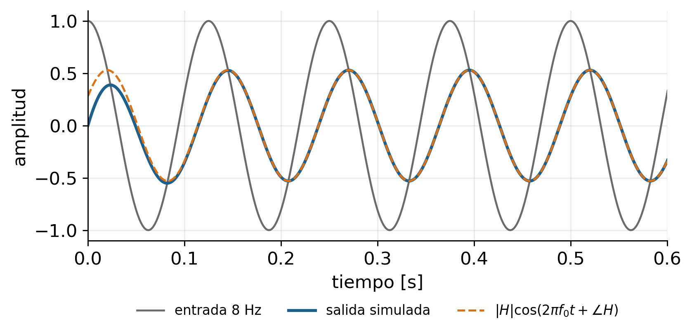
Series y transformada de Fourier
Del concepto al espectro de las bioseñales
Ruta de la sesión
Bloques
- Conceptualización: ¿por qué pensar en frecuencia?
- Serie de Fourier (señales periódicas)
- Transformada de Fourier (señales aperiódicas)
- Tipología de señales y la «familia» de Fourier
- Fourier y sistemas LTI
- De lo continuo a lo computable: DFT y FFT
- Usos en bioseñales, errores frecuentes y verificación
Al finalizar, el estudiante debe poder
- Escribir y justificar las ecuaciones de análisis y síntesis.
- Elegir la herramienta de Fourier según el tipo de señal.
- Explicar por qué las sinusoides son «especiales» para un sistema LTI.
- Relacionar convolución temporal con producto espectral.
- Calcular e interpretar un espectro con
numpy, reconociendo resolución, fuga y ventanas.
Texto guía: Semmlow, Circuits, Signals, and Systems for Bioengineers (3.ª ed.), cap. 3 (secc. 3.1–3.4).
1 · Conceptualización
El problema: lo que el tiempo no muestra
- Un EEG en reposo parece irregular en el tiempo, pero concentra energía en bandas: la oscilación alfa (8–12 Hz) aparece en reposo con ojos cerrados.
- Un ECG contaminado por la red eléctrica lleva una componente de 60 Hz (Colombia) que en el tiempo se confunde con la morfología.
- La deriva de línea base por respiración vive por debajo de ~1 Hz.
Pregunta guía: ¿cuánta de la señal oscila a cada frecuencia y con qué fase?
ImportanteNo todo es «ruido»
Deriva, interferencia de red y artefactos de movimiento tienen estructuras espectrales distintas. El análisis en frecuencia sirve precisamente para distinguirlas y elegir el tratamiento adecuado.
Conectar con la semana 4: limitaciones del dominio temporal. Insistir en que el análisis frecuencial no reemplaza al temporal: son dos representaciones de la misma información.
La idea central
Toda señal «razonable» puede escribirse como una suma (o integral) de sinusoides de distinta frecuencia, amplitud y fase.
- Análisis: de \(x(t)\) a sus componentes → espectro.
- Síntesis: de las componentes a \(x(t)\) → reconstrucción.
- Ambas representaciones contienen la misma información; cambia qué es fácil de ver.
Vocabulario mínimo
| Término | Significado |
|---|---|
| Espectro | Amplitud (y fase) de las componentes en función de la frecuencia |
| Espectro de magnitud / fase | \(\lvert X \rvert\) y \(\angle X\) |
| Ancho de banda | Intervalo de frecuencias donde se concentra la energía relevante |
| Armónico \(m\) | Componente a \(m f_1\) en una señal periódica de fundamental \(f_1\) |
¿Por qué sinusoides y no otra base?
\[ \cos(2\pi f t) \;\xrightarrow{\;\text{LTI}\;}\; |H(f)|\cos\!\big(2\pi f t + \angle H(f)\big) \]
Un sistema lineal e invariante en el tiempo (LTI) excitado por una sinusoide responde, en régimen permanente, con una sinusoide de la misma frecuencia; solo cambian amplitud y fase.
Si conozco cómo el sistema trata cada frecuencia, conozco cómo trata cualquier señal que sea suma de ellas.
La línea discontinua es la predicción analítica con H(f)=1/(1+jf/fc). La coincidencia tras el transitorio es el argumento visual de que las sinusoides son autofunciones del sistema. Esto se formaliza en el bloque 5.
El mecanismo: correlación con sinusoides de prueba
- Cada coeficiente de Fourier es una correlación (producto interno) entre la señal y una sinusoide de prueba:
\[ \langle x, \phi_m\rangle = \frac{1}{T}\int_{0}^{T} x(t)\,\phi_m^*(t)\,dt \]
- Correlación alta ⇒ la señal «contiene» esa frecuencia con esa fase. Funciona porque la base es ortogonal:
\[ \frac{1}{T}\int_{0}^{T} e^{j2\pi m f_1 t}\,e^{-j2\pi k f_1 t}\,dt = \begin{cases} 1, & m = k \\ 0, & m \neq k \end{cases} \]
- Ortogonalidad ⇒ cada coeficiente se calcula independientemente: añadir armónicos no altera los ya calculados.
2 · Serie de Fourier
Punto de partida: señales periódicas
\[ x(t) = x(t + T) \quad \forall t, \qquad f_1 = \frac{1}{T}\;\;\text{(frecuencia fundamental)} \]
- La serie de Fourier representa \(x(t)\) con sinusoides a múltiplos enteros de \(f_1\): \(f_m = m f_1\).
- Consecuencia inmediata: el espectro de una señal continua periódica es discreto (líneas separadas \(1/T\)).
- Resolución espectral: dos componentes solo se distinguen si están separadas al menos \(1/T\) → mayor periodo (o registro), mejor resolución.
Nota
Una bioseñal real casi nunca es estrictamente periódica (ECG, marcha, respiración son cuasiperiódicas). La serie de Fourier es un modelo; su validez depende de cuánto se aparta la señal de ese supuesto.
Tres formas equivalentes de la serie
Rectangular (trigonométrica) \[ x(t) = \frac{a_0}{2} + \sum_{m=1}^{\infty}\big[a_m\cos(2\pi m f_1 t) + b_m\sin(2\pi m f_1 t)\big] \] \[ a_m = \frac{2}{T}\int_0^T x(t)\cos(2\pi m f_1 t)\,dt,\quad b_m = \frac{2}{T}\int_0^T x(t)\sin(2\pi m f_1 t)\,dt \]
Polar (magnitud y fase) \[ x(t) = \frac{a_0}{2} + \sum_{m=1}^{\infty} C_m\cos(2\pi m f_1 t + \theta_m) \] \[ C_m = \sqrt{a_m^2 + b_m^2},\qquad \theta_m = \operatorname{atan2}(-b_m,\,a_m) \]
Exponencial compleja \[ x(t) = \sum_{m=-\infty}^{\infty} c_m\,e^{j2\pi m f_1 t},\qquad c_m = \frac{1}{T}\int_0^T x(t)\,e^{-j2\pi m f_1 t}\,dt \]
Relaciones (señal real)
- \(c_0 = a_0/2\) (valor medio)
- \(c_m = \tfrac{1}{2}(a_m - j b_m)\), \(\;|c_m| = C_m/2\)
- \(c_{-m} = c_m^*\) → simetría hermítica: magnitud par, fase impar.
Advertencia
No hay convención única de escala. numpy.fft no normaliza la transformada directa: el usuario debe escalar.
Las frecuencias negativas no son “físicas”; son la contrapartida matemática de escribir un coseno real como suma de dos exponenciales conjugadas (Euler). Por eso la magnitud bilateral es la mitad de la amplitud física.
Simetría: atajos para calcular e interpretar
| Simetría de \(x(t)\) | Consecuencia en la serie |
|---|---|
| Par: \(x(t) = x(-t)\) | \(b_m = 0\) → solo cosenos, \(c_m\) real |
| Impar: \(x(t) = -x(-t)\) | \(a_m = 0\) → solo senos, \(c_m\) imaginario puro |
| Media onda: \(x(t) = -x(t + T/2)\) | Solo armónicos impares |
| Media nula | \(a_0 = 0\) |
- La simetría depende del origen de tiempo elegido: desplazar la señal cambia fases, no magnitudes.
- Útil como verificación: si una onda cuadrada impar produce cosenos o armónicos pares en su cálculo, hay un error.
Ejemplo: tren de pulsos rectangulares
Pulso de amplitud \(V_p\), ancho \(W\), periodo \(T\), centrado en \(t=0\):
\[ c_m = \frac{V_p W}{T}\,\operatorname{sinc}\!\left(\frac{mW}{T}\right) \] \[ \operatorname{sinc}(u)=\frac{\sin(\pi u)}{\pi u} \]
- Envolvente tipo sinc: ceros en \(f = k/W\).
- Pulso más angosto ⇒ envolvente más ancha.
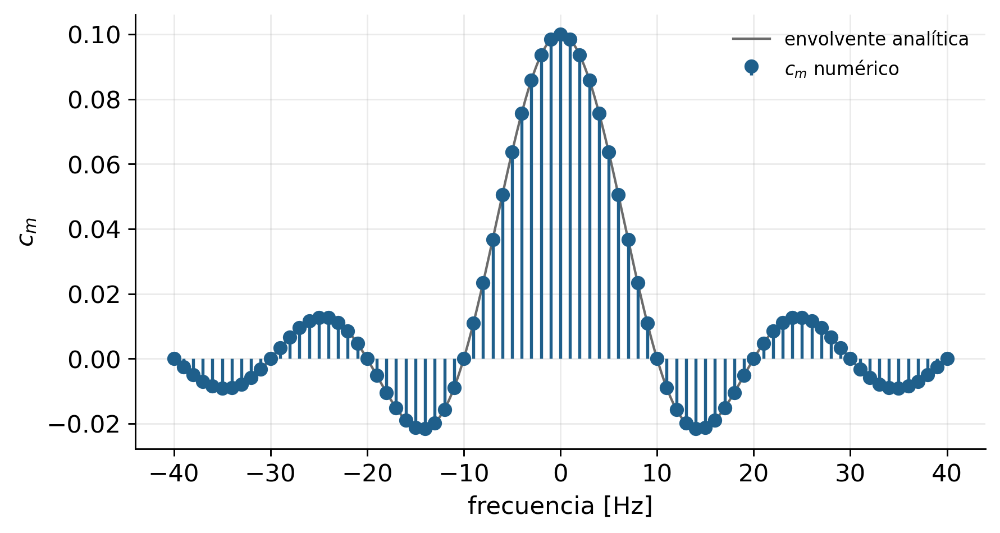
Convergencia y fenómeno de Gibbs
Dirichlet (suficientes): \(x(t)\) absolutamente integrable en un periodo; finitos máximos, mínimos y discontinuidades por periodo.
- Donde \(x(t)\) es continua, la serie converge a \(x(t)\); en un salto, al punto medio.
- Cerca del salto persiste un sobrepaso de ≈ 9 % del salto que no desaparece al aumentar \(M\): solo se estrecha.
M = 5 armónicos → máximo = 1.1884
M = 21 armónicos → máximo = 1.1797
M = 101 armónicos → máximo = 1.1790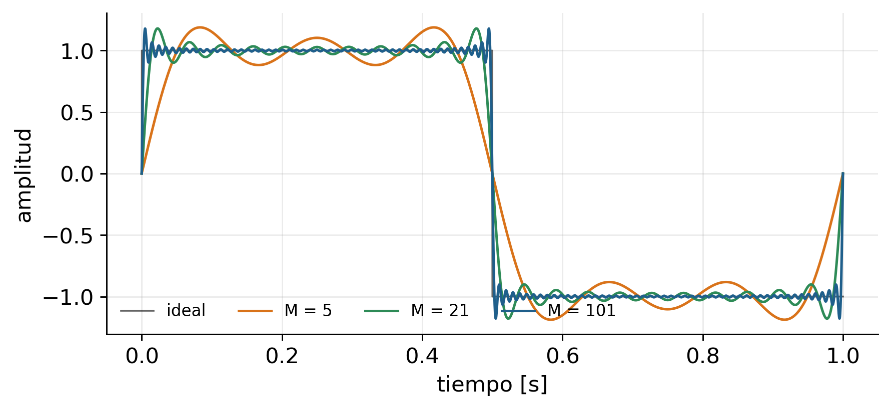
Valor teórico del sobrepaso: aproximadamente 0,0895 del salto; para un salto de 2 (de −1 a +1) el máximo tiende a ≈1,179. Relevancia práctica: truncar un espectro (filtro ideal) introduce oscilaciones en bordes abruptos; esto reaparece en diseño de filtros FIR y en ventanas.
Potencia y teorema de Parseval (serie)
\[ P_x = \frac{1}{T}\int_0^T |x(t)|^2\,dt = \sum_{m=-\infty}^{\infty}|c_m|^2 = c_0^2 + \sum_{m=1}^{\infty}\frac{C_m^2}{2} \]
- La potencia media se reparte entre armónicos: \(|c_m|^2\) indica cuánta potencia aporta cada frecuencia.
- Permite cuantificar la calidad de una aproximación truncada: fracción de potencia capturada por los primeros \(M\) armónicos.
- Interpretación biomédica: «¿qué porcentaje de la potencia del ECG está por debajo de 40 Hz?» es una pregunta de Parseval, no de inspección visual.
¿Es el ECG una señal periódica?
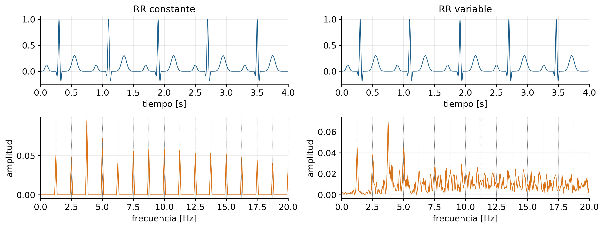
Líneas punteadas: múltiplos de 1/RR = 1,25 Hz. Con RR constante el espectro es de líneas; con variabilidad, la energía se dispersa alrededor de los armónicos, más en los de orden alto.
Pregunta para el grupo: ¿por qué la dispersión aumenta con el orden del armónico? Pista: una variación relativa del periodo produce una variación de frecuencia proporcional a m·f1.
3 · Transformada de Fourier
De la serie a la transformada: \(T \to \infty\)
- Una señal aperiódica es una periódica con periodo infinito.
- El espaciamiento entre líneas \(1/T \to 0\): el espectro discreto se vuelve continuo.
- Se cumple \(T\,c_m = X(f)\big|_{f=m/T}\): la serie muestrea la transformada.
\[ X(f) = \lim_{T\to\infty} T\,c_m \]
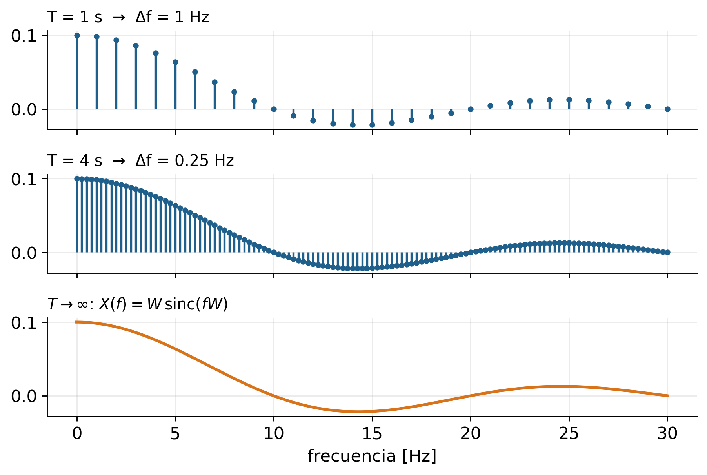
Definición del par transformado
\[ \boxed{X(f) = \int_{-\infty}^{\infty} x(t)\,e^{-j2\pi f t}\,dt} \qquad \boxed{x(t) = \int_{-\infty}^{\infty} X(f)\,e^{j2\pi f t}\,df} \]
Con frecuencia angular \(\omega = 2\pi f\): \(\;x(t) = \dfrac{1}{2\pi}\displaystyle\int_{-\infty}^{\infty} X(\omega)e^{j\omega t}d\omega\).
- \(X(f)\) es, en general, complejo: \(X(f) = |X(f)|\,e^{j\angle X(f)}\).
- Unidades: si \(x\) está en mV, \(X(f)\) está en mV·s = mV/Hz → es una densidad espectral de amplitud, no una amplitud.
- Existencia (condición suficiente): \(\int |x(t)|\,dt < \infty\). Señales de energía finita tienen TF en sentido cuadrático; sinusoides y constantes requieren deltas de Dirac.
- Para \(x(t)\) real: \(X(-f) = X^*(f)\) → basta el semieje \(f \ge 0\).
Pares transformados fundamentales
| \(x(t)\) | \(X(f)\) | Lectura |
|---|---|---|
| \(\delta(t)\) | \(1\) | Un impulso contiene todas las frecuencias por igual |
| \(1\) | \(\delta(f)\) | Una constante es solo DC |
| \(\operatorname{rect}(t/W)\) | \(W\operatorname{sinc}(fW)\) | Corto en tiempo ⇒ ancho en frecuencia |
| \(e^{-at}u(t),\ a>0\) | \(\dfrac{1}{a + j2\pi f}\) | Respuesta de un sistema de primer orden |
| \(\cos(2\pi f_0 t)\) | \(\tfrac12[\delta(f-f_0) + \delta(f+f_0)]\) | Dos líneas en \(\pm f_0\) |
| \(e^{-\pi t^2}\) | \(e^{-\pi f^2}\) | La gaussiana es su propia transformada |
| \(\sum_n \delta(t - nT)\) | \(\tfrac{1}{T}\sum_k \delta(f - k/T)\) | Base del muestreo (semana 8) |
Propiedades de la transformada
| Propiedad | Tiempo | Frecuencia |
|---|---|---|
| Linealidad | \(a x_1(t) + b x_2(t)\) | \(a X_1(f) + b X_2(f)\) |
| Desplazamiento temporal | \(x(t - t_0)\) | \(e^{-j2\pi f t_0}X(f)\) |
| Desplazamiento en frecuencia (modulación) | \(e^{j2\pi f_0 t}x(t)\) | \(X(f - f_0)\) |
| Escalamiento | \(x(at)\) | \(\dfrac{1}{|a|}X\!\left(\dfrac{f}{a}\right)\) |
| Dualidad | \(X(t)\) | \(x(-f)\) |
| Derivación | \(\dfrac{d x}{dt}\) | \(j2\pi f\,X(f)\) |
| Convolución | \((x * h)(t)\) | \(X(f)\,H(f)\) |
| Multiplicación | \(x(t)\,w(t)\) | \((X * W)(f)\) |
| Parseval (energía) | \(\int |x(t)|^2 dt\) | \(\int |X(f)|^2 df\) |
Las dos filas resaltadas (convolución y multiplicación) son las más importantes del curso: la primera explica el filtrado; la segunda, el efecto de las ventanas y del muestreo.
Escalamiento: duración ↔︎ ancho de banda
- Comprimir en el tiempo expande en frecuencia, y viceversa.
- El producto duración × ancho de banda tiene una cota inferior: no se puede ser arbitrariamente corto y angosto a la vez.
- Lectura en ECG: el complejo QRS (decenas de ms) aporta el contenido de alta frecuencia; las ondas P y T, más lentas, concentran su energía en bajas frecuencias.
- La derivación (\(j2\pi f\)) realza altas frecuencias: por eso la derivada amplifica ruido de banda ancha.
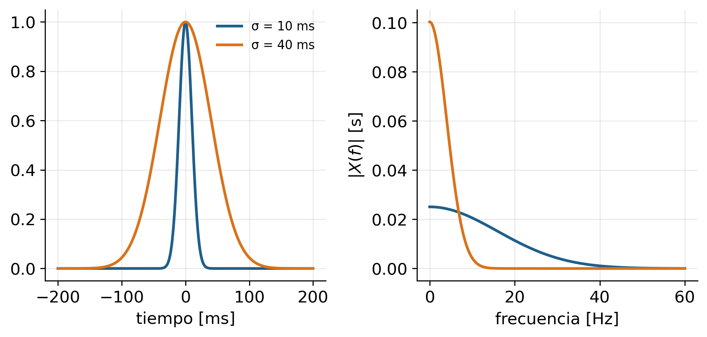
Desplazamiento temporal: magnitud invariante, fase lineal
\[ x(t - t_0) \;\longleftrightarrow\; e^{-j2\pi f t_0}X(f) \quad\Rightarrow\quad |\cdot| \text{ igual},\qquad \angle \text{ cambia en } -2\pi f t_0 \]
- Un retardo puro es una fase que crece linealmente con \(f\).
- Si un sistema retrasa todas las frecuencias el mismo tiempo (fase lineal), la morfología de la señal se preserva.
- Si la fase es no lineal, cada componente llega con distinto retardo → distorsión de forma, aunque \(|H(f)|\) sea plana en la banda.
ImportanteConsecuencia clínica
En ECG, un pasaaltas de fase no lineal para remover la deriva puede deformar el segmento ST. Las recomendaciones de la AHA (Kligfield et al., 2007) fijan un corte bajo de 0,05 Hz, admitiendo hasta 0,67 Hz solo con filtros digitales lineales de fase cero.
4 · Tipología de señales y herramientas
La familia de Fourier: cuatro casos
| Señal en el tiempo | Herramienta | Espectro |
|---|---|---|
| Continua, periódica | Serie de Fourier (SF) | Discreto, no periódico |
| Continua, aperiódica | Transformada de Fourier (TF, CTFT) | Continuo, no periódico |
| Discreta, aperiódica | Transformada de Fourier en tiempo discreto (DTFT) | Continuo, periódico (periodo \(f_s\)) |
| Discreta, periódica / segmento finito | Transformada discreta de Fourier (DFT) | Discreto y periódico |
. . .
TipRegla de dualidad
Discreto en un dominio ⇔ periódico en el otro. Muestrear en el tiempo periodiza el espectro (aliasing); muestrear el espectro periodiza el tiempo (fuga espectral).
- Solo la DFT (y su inversa) puede calcularse en un computador: número finito de muestras en ambos dominios.
Otras distinciones que cambian la herramienta
Energía vs. potencia
- Energía finita (transitorios, un latido aislado, un potencial evocado): \(E = \int |x|^2 dt < \infty\) → TF y densidad espectral de energía \(|X(f)|^2\).
- Potencia finita (periódicas, registros continuos): \(E = \infty\), \(P < \infty\) → SF o densidad espectral de potencia.
Determinística vs. aleatoria / estacionaria vs. no estacionaria
- En señales aleatorias (EEG, EMG), \(|X(f)|^2\) de una realización es un estimador ruidoso: se requiere promediado (periodograma de Welch, semana 8).
- Si el contenido espectral cambia en el tiempo (marcha con cambios de velocidad, EEG en tareas), una única TF promedia esos cambios: se necesita análisis tiempo-frecuencia (STFT, semana 9).
5 · Fourier y sistemas LTI
¿De dónde sale la base exponencial compleja?
| Año | Aporte |
|---|---|
| 1748 | Euler, Introductio: \(e^{j\theta} = \cos\theta + j\sin\theta\) |
| s. XVIII | Euler, d’Alembert: EDO lineales de coeficientes constantes resueltas con \(e^{st}\) → polinomio característico |
| 1807 / 1822 | Fourier, ecuación del calor: series trigonométricas |
| 1893 | Steinmetz: fasores en corriente alterna; \(\tfrac{d}{dt} \to j\omega\) |
Una sinusoide real es la suma de dos exponenciales conjugadas:
\[ \cos(\omega t + \theta) = \tfrac{1}{2}e^{j\theta}e^{j\omega t} + \tfrac{1}{2}e^{-j\theta}e^{-j\omega t} \]
- Un solo número complejo guarda amplitud y fase.
- La historia explica cómo llegó la idea; no explica por qué es la base correcta. Eso lo da la estructura (siguiente diapositiva).
Fourier trabajó con senos y cosenos; la forma exponencial se impuso después por su economía algebraica. Evitar atribuirle a Fourier la forma compleja.
Por qué la exponencial: invariancia ante desplazamientos
Dos operaciones básicas actúan sobre \(e^{st}\) solo como multiplicación por una constante:
\[ \frac{d}{dt}e^{st} = s\,e^{st}, \qquad e^{s(t-\tau)} = \underbrace{e^{-s\tau}}_{\text{constante}}\;e^{st} \]
- Una convolución es una suma ponderada de copias desplazadas de la entrada ⇒ si cada copia es la misma exponencial por un escalar, la salida también lo es.
- Unicidad: buscar \(\phi\) continua, no nula, con \(\phi(t-\tau) = \lambda(\tau)\,\phi(t)\) para todo \(\tau\) conduce a \(\phi(a+b) = \phi(a)\,\phi(b)\), cuya única solución continua es \(\phi(t) = e^{st}\).
- Senos y cosenos por separado no son autofunciones: un LTI convierte un coseno en un coseno desfasado (mezcla de seno y coseno).
- \(s = j\omega\) → módulo constante (ni crece ni decae) → Fourier. \(s = \sigma + j\omega\) general → Laplace (semana 12).
TipPregunta para el grupo
Si la ganancia de un sistema depende de \(t\), ¿sigue siendo \(e^{j\omega t}\) una autofunción? ¿Qué dice esto sobre el alcance de Fourier?
Idea clave: la base exponencial diagonaliza simultáneamente todos los sistemas LTI; la convolución se vuelve producto frecuencia a frecuencia. Respuesta a la pregunta: no, porque e^{jω(t−τ)} ya no sale del operador como constante; el valor de Fourier depende del supuesto LTI.
Las exponenciales complejas son autofunciones
Para un sistema LTI con respuesta al impulso \(h(t)\) y entrada \(x(t) = e^{j2\pi f t}\):
\[ y(t) = \int_{-\infty}^{\infty} h(\tau)\,e^{j2\pi f (t-\tau)}\,d\tau = e^{j2\pi f t}\underbrace{\int_{-\infty}^{\infty} h(\tau)\,e^{-j2\pi f\tau}\,d\tau}_{H(f)} \]
- La salida es la misma exponencial multiplicada por un número complejo \(H(f)\): la respuesta en frecuencia.
- \(H(f)\) es la transformada de Fourier de la respuesta al impulso; \(|H(f)|\) es ganancia y \(\angle H(f)\) desfase por frecuencia.
Advertencia
Exige linealidad e invariancia. Muchos sistemas fisiológicos no lo son (saturación, adaptación neural): allí \(H(f)\) es, a lo sumo, una aproximación local.
Teorema de convolución
\[ y(t) = (h * x)(t) \quad\Longleftrightarrow\quad Y(f) = H(f)\,X(f) \]
Qué significa
- Una operación integral en el tiempo se vuelve un producto punto a punto en frecuencia.
- Filtrar = pesar cada componente espectral por \(H(f)\).
- Cascada de sistemas: \(H_{\text{total}} = H_1 H_2 \cdots\)
Qué permite
- Diseñar filtros especificando \(|H(f)|\).
- Calcular convoluciones largas con FFT: \(\mathcal{O}(N\log N)\) en vez de \(\mathcal{O}(N^2)\).
- Identificar sistemas: \(H(f) = Y(f)/X(f)\) donde \(X(f) \neq 0\).
Conexión con semanas 10–12: convolución en el dominio frecuencial y relación entre respuesta al impulso y espectro. Aquí solo se sienta la base.
Verificación numérica: media móvil
fs = 500
t, x = ecg_sintetico(fs, 4, 0.8)
x = x + 0.1 * np.sin(2 * np.pi * 60 * t) # interferencia de red
L = 25; h = np.ones(L) / L # media móvil de 50 ms
y_t = np.convolve(x, h) # convolución lineal (tiempo), N + L - 1
# Producto espectral con relleno suficiente
nfft = len(x) + L - 1
y_f = np.fft.irfft(np.fft.rfft(x, nfft) * np.fft.rfft(h, nfft), nfft)
# Producto espectral SIN relleno → convolución circular
y_c = np.fft.irfft(np.fft.rfft(x) * np.fft.rfft(h, len(x)), len(x))
print(f"max|y_t - y_f| = {np.max(np.abs(y_t - y_f)):.2e}")
err_c = np.abs(y_t[:len(x)] - y_c)
print(f"max|y_t[:N] - y_circular| = {err_c.max():.2e}")
print(f"muestras afectadas (error > 1e-12): {np.sum(err_c > 1e-12)}"
f" → índices {np.flatnonzero(err_c > 1e-12).min()}–{np.flatnonzero(err_c > 1e-12).max()}")max|y_t - y_f| = 2.22e-16
max|y_t[:N] - y_circular| = 1.05e-02
muestras afectadas (error > 1e-12): 24 → índices 0–23El producto de DFT equivale a convolución circular. Solo coincide con la lineal si ambas secuencias se rellenan con ceros hasta al menos \(N + L - 1\).
Respuesta en frecuencia de la media móvil
\[ H(f) = \frac{1}{L}\,\frac{\sin(\pi f L / f_s)}{\sin(\pi f / f_s)}\,e^{-j\pi f (L-1)/f_s} \]
- Ceros en \(f = k\,f_s/L\). Con \(f_s = 500\) Hz y \(L = 25\): 20, 40, 60, 80 … Hz.
- Anula 60 Hz, pero también atenúa fuertemente el contenido del QRS: compromiso.
- La fase es lineal (retardo constante de \((L-1)/2\) muestras).
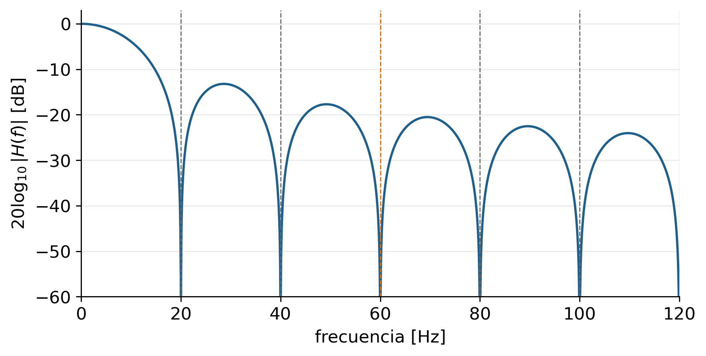
6 · De lo continuo a lo computable
Transformada discreta de Fourier (DFT)
\[ X[m] = \sum_{n=0}^{N-1} x[n]\,e^{-j2\pi mn/N}, \qquad x[n] = \frac{1}{N}\sum_{m=0}^{N-1} X[m]\,e^{j2\pi mn/N} \]
| Magnitud | Expresión | Ejemplo: \(f_s = 500\) Hz, \(N = 5000\) |
|---|---|---|
| Duración del registro | \(T_r = N/f_s\) | 10 s |
| Separación entre bins | \(\Delta f = f_s/N = 1/T_r\) | 0,1 Hz |
| Frecuencia del bin \(m\) | \(f_m = m\,f_s/N\) | \(m = 600 \Rightarrow 60\) Hz |
| Máxima frecuencia representable | \(f_s/2\) (Nyquist) | 250 Hz |
- Supuesto implícito: el segmento de \(N\) muestras es un periodo de una señal periódica.
- La resolución depende de la duración del registro, no de \(f_s\).
FFT: el algoritmo, no otra transformada
- La FFT calcula exactamente la DFT, reorganizando operaciones (Cooley & Tukey, 1965).
- Costo: DFT directa \(\sim N^2\) multiplicaciones; FFT radix-2 \(\sim \tfrac{N}{2}\log_2 N\).
N = 1024: N² ≈ 1.0e+06 (N/2)·log2 N ≈ 5.1e+03 razón ≈ 205
N = 16384: N² ≈ 2.7e+08 (N/2)·log2 N ≈ 1.1e+05 razón ≈ 2,341
N = 1048576: N² ≈ 1.1e+12 (N/2)·log2 N ≈ 1.0e+07 razón ≈ 104,858En numpy
X = np.fft.rfft(x) # solo m = 0 … N/2 (señal real)
f = np.fft.rfftfreq(len(x), 1/fs) # eje de frecuencias en Hz
A = 2*np.abs(X)/len(x) # amplitud unilateral (excepto DC y Nyquist)
Advertencia
«FFT» no es sinónimo de «espectro». Es un algoritmo; lo que se interpreta depende de ventana, escala, duración y supuestos.
Fuga espectral
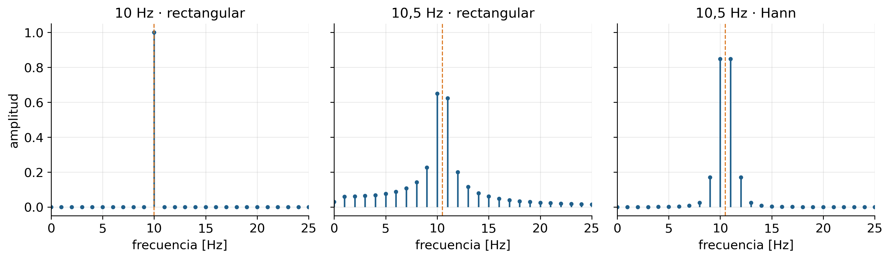
- Si el segmento no contiene un número entero de ciclos, su «extensión periódica» tiene discontinuidades → la energía se filtra a bins vecinos y el pico se subestima.
- Equivale a multiplicar por una ventana rectangular ⇒ convolucionar el espectro con un sinc.
Ventanas: un compromiso, no una corrección
| Ventana | Lóbulo principal | Lóbulos laterales |
|---|---|---|
| Rectangular | Más angosto | Altos (≈ −13 dB) |
| Hann | ≈ 2× más ancho | Bajos (≈ −31 dB) y decaen rápido |
- Angosto ⇒ mejor para separar tonos cercanos de amplitud similar.
- Lóbulos bajos ⇒ mejor para ver componentes débiles junto a una fuerte.
- Toda ventana reduce la energía: hay que corregir la ganancia.
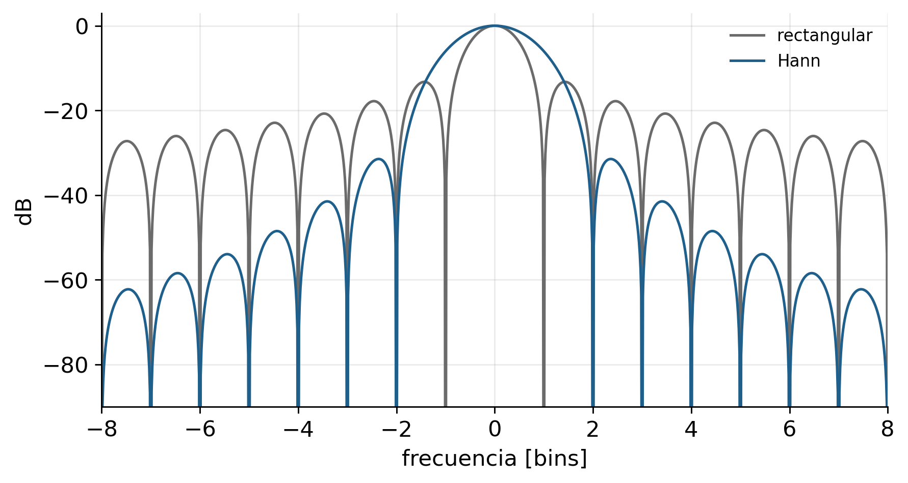
Resolución: duración del registro vs. relleno con ceros
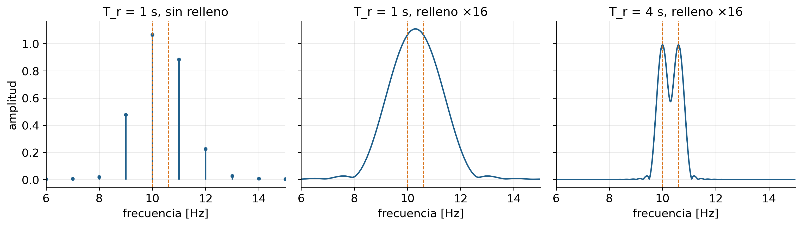
- \(\Delta f = 1/T_r\) fija la resolución real; el relleno solo reduce el espaciamiento de la grilla.
- Implicación experimental: la resolución espectral se decide al diseñar el protocolo de adquisición (duración del registro), no en el posprocesamiento.
Muestreo y aliasing (anticipo de la semana 8)
- Muestrear equivale a multiplicar por un tren de impulsos ⇒ el espectro se replica cada \(f_s\).
- Si \(x(t)\) tiene componentes por encima de \(f_s/2\), las réplicas se solapan: una componente en \(f\) aparece en \(|f - k f_s|\).
- El aliasing no se puede deshacer después de muestrear: se previene con filtro antialiasing analógico y \(f_s\) adecuada.
\[ x_s(t) = x(t)\sum_{n}\delta(t - nT_s) \;\longleftrightarrow\; X_s(f) = f_s\sum_{k} X(f - k f_s) \]
Nota
Es la misma regla de dualidad del bloque 4: discreto en el tiempo ⇒ periódico en frecuencia.
7 · Usos en bioseñales
Dónde se usa Fourier en ingeniería biomédica
| Aplicación | Qué se hace en frecuencia | Cuidado metodológico |
|---|---|---|
| EEG | Potencia por bandas (δ, θ, α, β, γ); ritmo alfa 8–12 Hz | Señal no estacionaria y aleatoria: estimación promediada |
| ECG | Identificar interferencia de red, deriva, contenido del QRS; diseñar filtros | Fase lineal para no distorsionar ST |
| EMG de superficie | Frecuencia media/mediana como indicador de fatiga | El desplazamiento espectral depende también de otros factores (grosor de tejido, electrodos) |
| Respiración / HRV | Componentes periódicas de baja frecuencia | Requiere registros largos: \(\Delta f = 1/T_r\) |
| Marcha | Frecuencia de zancada y armónicos; regularidad | Cambios de velocidad rompen la periodicidad |
| Imágenes médicas | TF 2D: filtrado, reconstrucción (TC, RM) | La RM adquiere directamente el «espacio k» (dominio de Fourier) |
| Instrumentación | Ancho de banda de sensores, amplificadores y filtros antialiasing | La cadena de adquisición es un sistema LTI (aprox.) |
Ejemplo integrado: tres «contaminaciones», tres estructuras
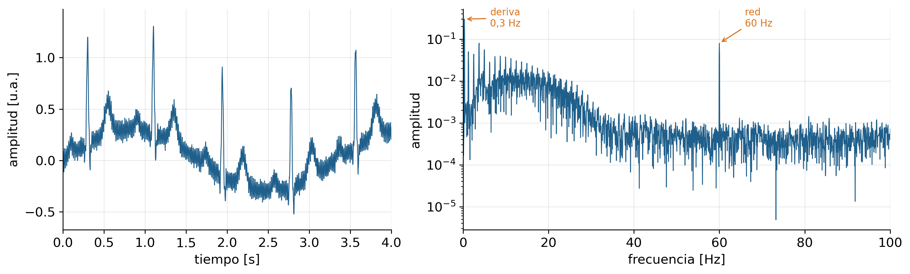
- Deriva: energía concentrada a muy baja frecuencia, solapada con la banda útil baja del ECG.
- Red: una línea angosta y estable → candidata a filtro rechaza-banda (notch).
- Ruido blanco: piso espectral aproximadamente plano; no se elimina con un notch.
Pedir a los estudiantes que propongan un tratamiento distinto para cada componente y justifiquen por qué un único pasabanda no es la respuesta “correcta” por defecto.
Cierre
Errores frecuentes
- Llamar «FFT» al espectro e ignorar escala, ventana y supuesto de periodicidad.
- Creer que el relleno con ceros mejora la resolución. Solo interpola; la resolución es \(1/T_r\).
- Leer amplitudes sin corregir la ventana ni el factor 2 del espectro unilateral.
- Interpretar frecuencias negativas como fenómenos físicos en señales reales.
- Confundir convolución circular con lineal al filtrar por producto de DFT sin relleno.
- Ignorar la fase: dos señales con igual \(|X(f)|\) pueden tener morfologías muy distintas.
- Aplicar una sola TF a una señal no estacionaria y reportar un espectro «promedio» como si describiera cada instante.
- Suponer que todo sistema fisiológico es LTI para usar \(H(f)\) sin verificar.
- Tratar todo contenido no deseado como «ruido» y aplicar el mismo filtro a deriva, interferencia y artefactos.
Preguntas de verificación
- Una señal periódica tiene simetría de media onda. ¿Qué armónicos pueden ser distintos de cero y por qué?
- Si se duplica la duración de un pulso rectangular, ¿qué ocurre con la ubicación del primer cero de su espectro y con su valor en \(f=0\)?
- Un ECG se registra 8 s a 1000 Hz. ¿Cuál es la separación entre bins? ¿Cambia si se remuestrea a 500 Hz manteniendo los 8 s?
- ¿Por qué un retardo puro no altera \(|X(f)|\)? ¿Qué propiedad lo demuestra?
- Se multiplica en frecuencia \(\text{DFT}\{x\}\cdot\text{DFT}\{h\}\) con \(N = 1000\) y \(L = 51\) sin relleno. ¿Qué muestras de la salida están contaminadas y cuántas son?
- Un tono de 50,3 Hz se analiza con \(T_r = 1\) s. ¿Qué verá en el espectro con ventana rectangular? ¿Y con Hann?
- Explique por qué una media móvil de 25 muestras a 500 Hz elimina 60 Hz y qué costo tiene para el ECG.
Criterios de aprendizaje
| El estudiante… | Evidencia |
|---|---|
| Relaciona tipo de señal y herramienta | Elige SF / TF / DTFT / DFT y justifica la forma del espectro |
| Domina análisis y síntesis | Calcula coeficientes, usa simetrías, reconstruye y explica Gibbs |
| Usa propiedades | Predice el efecto de retardos, escalamientos y convoluciones sin recalcular |
| Conecta con LTI | Deduce \(H(f)\) como TF de \(h(t)\) y \(Y = HX\) |
| Calcula espectros con rigor | Escala correctamente, elige ventana, distingue resolución de espaciamiento |
| Interpreta en contexto biomédico | Distingue deriva, interferencia, ruido y contenido fisiológico por su estructura espectral |
Referencias
- Semmlow, J. (2018). Circuits, Signals, and Systems for Bioengineers: A MATLAB-Based Introduction (3.ª ed.). Academic Press. ISBN 978-0-12-809395-5. Cap. 3. Texto guía.
- Oppenheim, A. V., Willsky, A. S., & Nawab, S. H. (1997). Signals and Systems (2.ª ed.). Prentice Hall. Caps. 3–5.
- Cooley, J. W., & Tukey, J. W. (1965). An algorithm for the machine calculation of complex Fourier series. Mathematics of Computation, 19(90), 297–301. https://doi.org/10.1090/S0025-5718-1965-0178586-1
- Harris, F. J. (1978). On the use of windows for harmonic analysis with the discrete Fourier transform. Proceedings of the IEEE, 66(1), 51–83. https://doi.org/10.1109/PROC.1978.10837
- Kligfield, P., et al. (2007). Recommendations for the standardization and interpretation of the electrocardiogram: Part I. Circulation, 115(10), 1306–1324. https://doi.org/10.1161/CIRCULATIONAHA.106.180200
Todas las señales de esta presentación son sintéticas y se generan en el propio documento; no representan registros de pacientes.